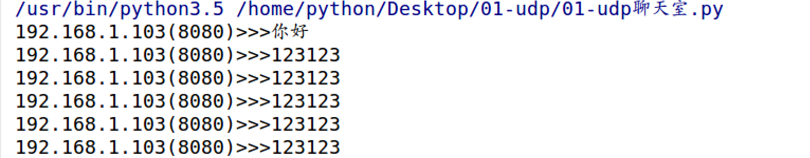

案例：UDP聊天室
1. 想法来源
去银行办理相关业务时，一般会先取号，然后等待叫号即可，如下图所示。那么能否用python来写一个程序，模拟当前叫号显示牌呢？
2. 需求分析
- 需要用一个程序先运行
- 让这个程序一直等待接收 其他 程序发送过来的数据
- 接收数据之后显示出来
3. 代码实现
import socket
def main():
"""
控制整体流程
:return:
"""
# 1. 创建UDP套接字
udp_socket = socket.socket(socket.AF_INET, socket.SOCK_DGRAM)
# 2. 绑定本地信息
udp_socket.bind(("", 7788))
try:
# 3. 循环接收数据，并打印
while True:
content, client_info = udp_socket.recvfrom(1024)
print("%s(%d)>>>%s" % (client_info[0], client_info[1], content.decode("gbk")))
except KeyboardInterrupt:
pass
finally:
udp_socket.close()
if __name__ == '__main__':
main()
运行结果：

4. 小总结
- 本程序较为简单
- 主要用到的技术点是：创建套接字，然后对这个套接字要绑定本地信息，再然后通过这个套接字接收数据，最后关闭套接字
- 要注意：如果绑定的7788端口在之前已经被另外一个程序占用，那么此时绑定会失败，可以通过尝试更换端口来实验